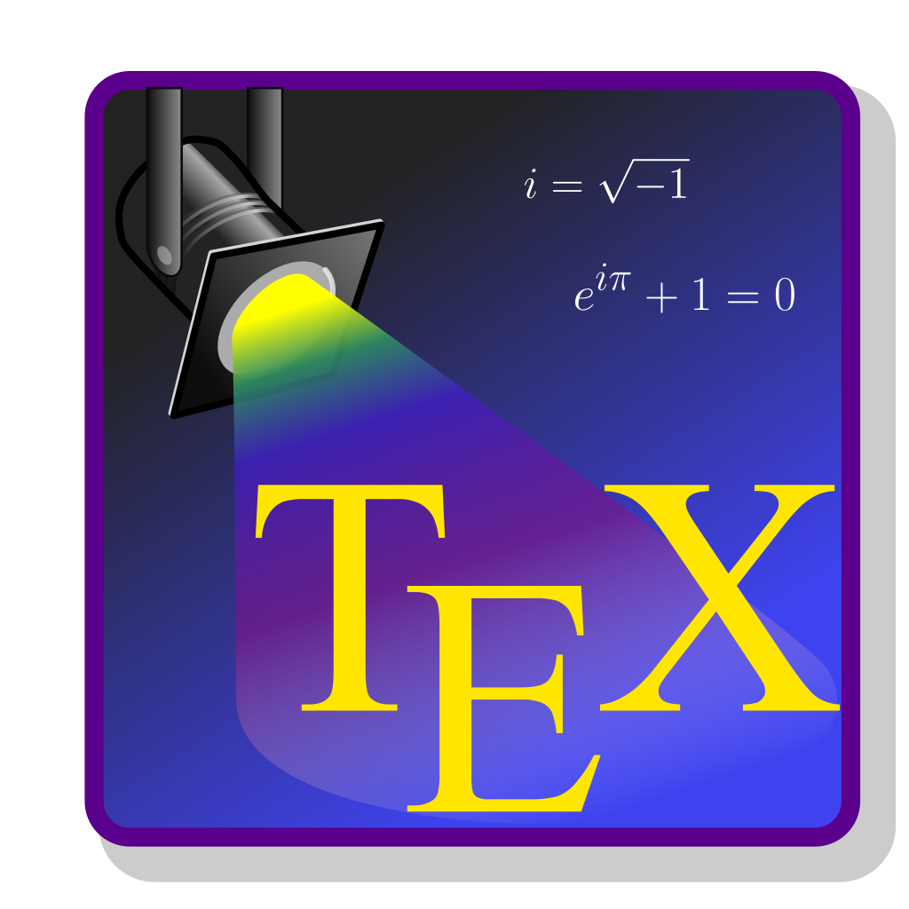

Como escrever relatórios de forma compreensível e profissional?
Introdução ao LaTeX
E se você fizer tudo isso com o  ?
?
Com o LaTeX você terá:
Numeração automática de capítulos, seções, subseções, figuras e tabelas, sem a necessidade de ajustes manuais.
Sumário dinâmico que se atualiza automaticamente com a numeração e a localização das seções.
Referências cruzadas atualizadas em tempo real, como “Figura 2.1” ou “Capítulo 3”.
Referências bibliográficas formatadas corretamente nas normas da ABNT com o auxílio de pacotes específicos.
Foco no conteúdo, sem se preocupar com detalhes de formatação.
Com o LaTeX, você pode automatizar todo o trabalho de formatação e concentrar seu tempo no conteúdo do seu relatório.
Breve introdução ao
O que é o ?
A pronúncia correta é ``Lêitech’’ e a forma de escrever é LaTeX (com “a” e “e” minúsculos).
LaTeX é um pacote dedicado à produção de textos impressos de alta qualidade, com foco especial em textos matemáticos.
LaTeX foi desenvolvido por Leslie Lamport como uma evolução do programa TeX, criado por Donald Knuth.

Leslie Lamport
Donald Knuth
Origem e Evolução do
O TeX surgiu nos anos 1970 com o propósito de melhorar a qualidade de impressão, levando em consideração as limitações das impressoras daquela época.
Na década de 1980 Leslie Lamport criou o LaTeX, com a intenção de simplificar o uso do TeX por meio de comandos que executam diferentes funções.
O LaTeX é um editor de textos especialmente projetado para atender às necessidades da área matemática, oferecendo comandos para a composição de diversas fórmulas.
Para entendermos melhor como o LaTeX funciona, precisamos conhecer as duas abordagens de processamento de texto: o estilo visual e o estilo lógico.
Ferramentas Essenciais para Trabalhar com
Para usar o LaTeX, precisamos de duas ferramentas essenciais:
Distribuição TeX:

MiKTeX
TeX Live
Ambiente de desenvolvimento integrado (IDE):

MiKTeX
TeX Live
Ferramentas Essenciais para Trabalhar com
- Há também uma plataforma online completa: Overleaf.
- Overleaf permite escrever, compilar e colaborar em documentos LaTeX diretamente no navegador da web (não precisa instalar nada).
- É especialmente útil para colaboração em tempo real e trabalho em equipe.
Como um documento é processado em ?
O documento é escrito usando comandos no , e salvo em um arquivo com extensão
.tex.O LaTeX interpreta os comandos e os transforma em uma linguagem compreensível pelo TeX.
O documento LaTeX é processado por um compilador, que gera um arquivo com extensão
.dvi(device independent).O arquivo
.dvipode ser visualizado em um visualizador específico ou convertido para extensão.pdf(portable document format).
Primeiros Passos em
Texto Colorido
Nomes de cores adicionais podem ser usadas no pacote xcolor com as opções dvipsnames, svgnamese x11names.
- Por exemplo, se você escrever
\usepackage[dvipsnames]{xcolor}você pode acessar pelo nome as cores: